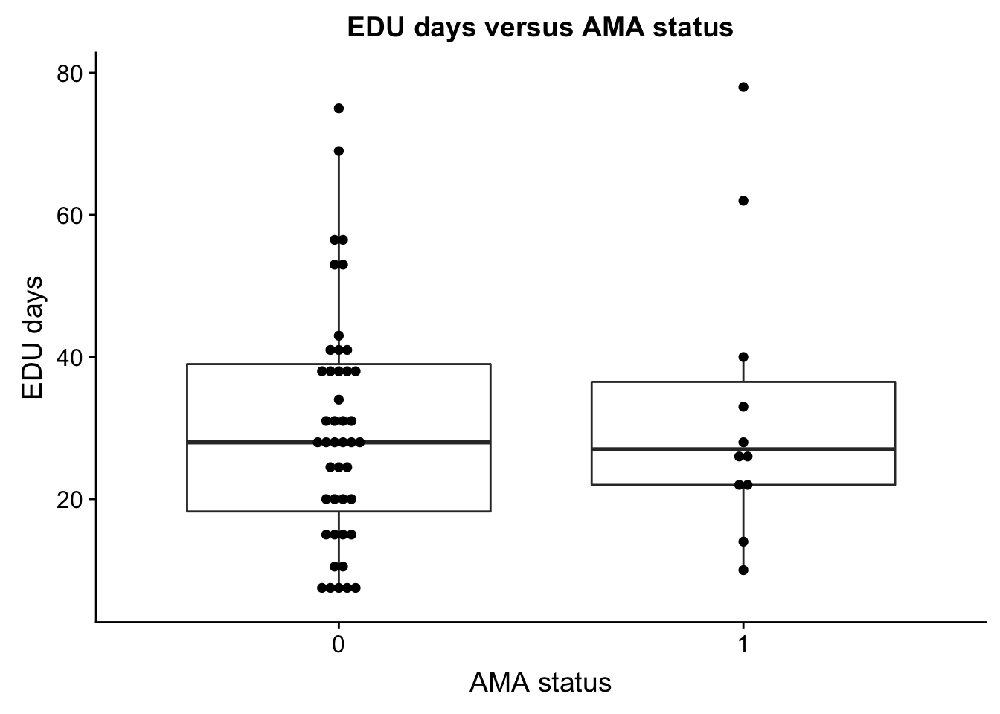
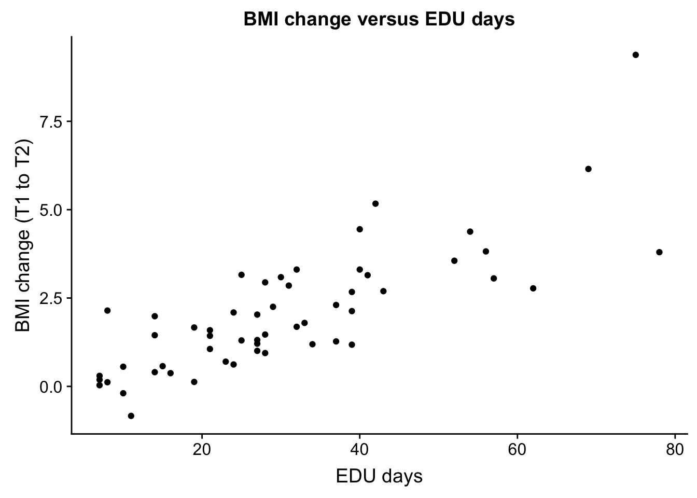
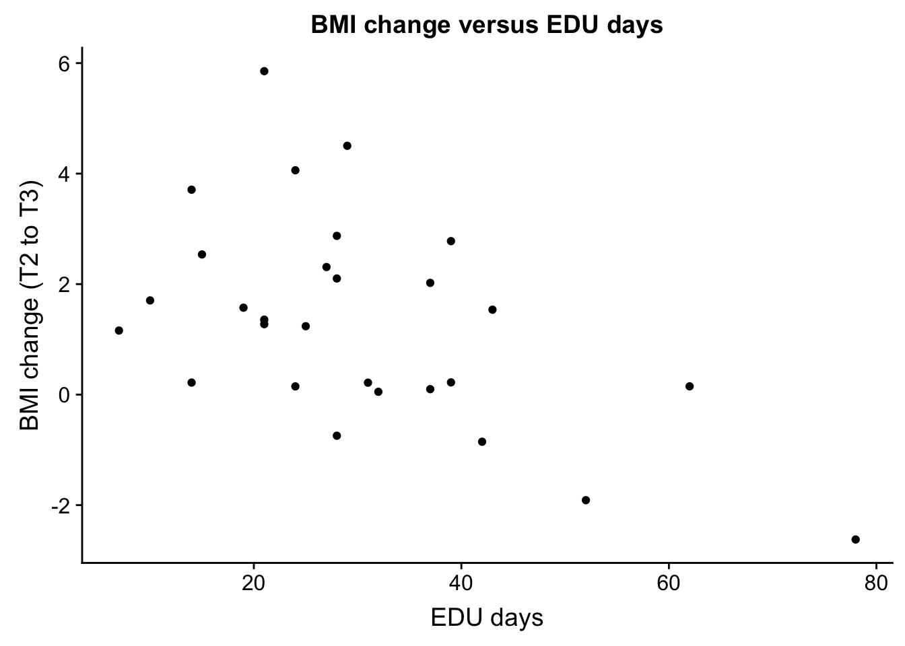
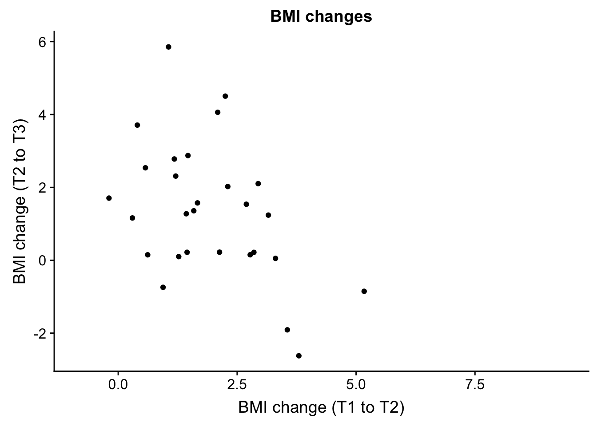
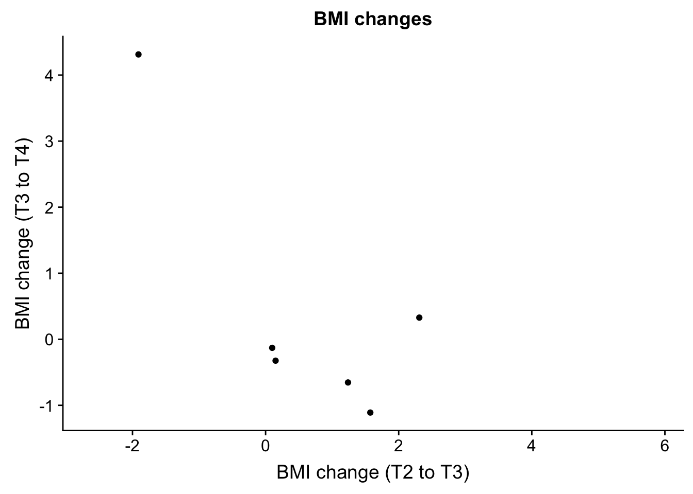
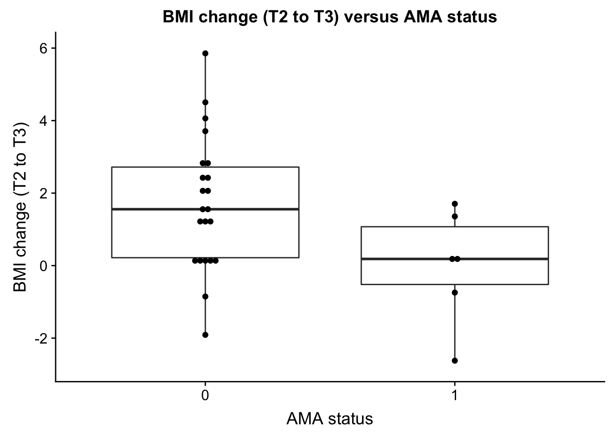
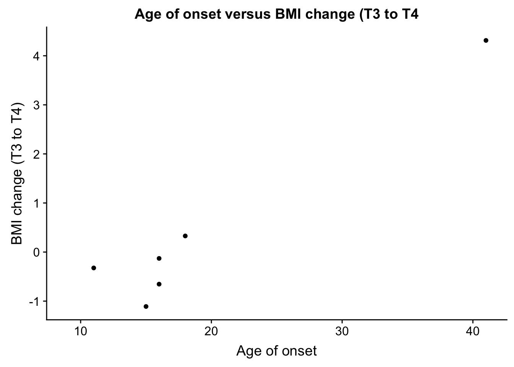
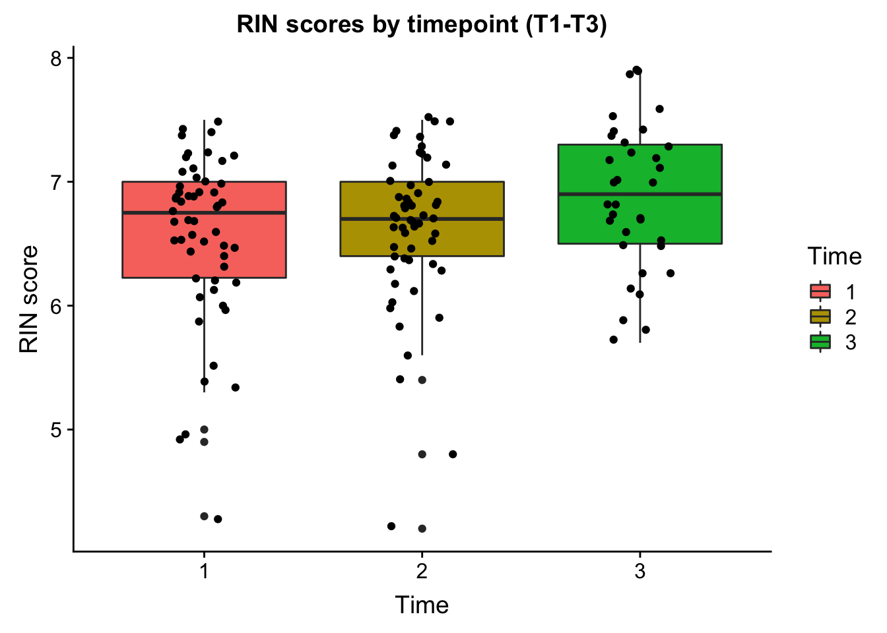
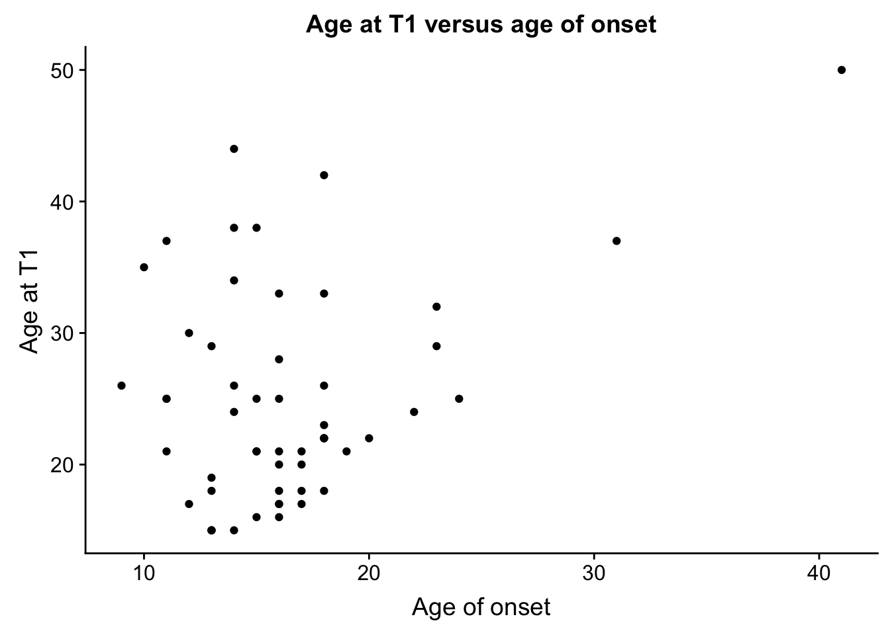
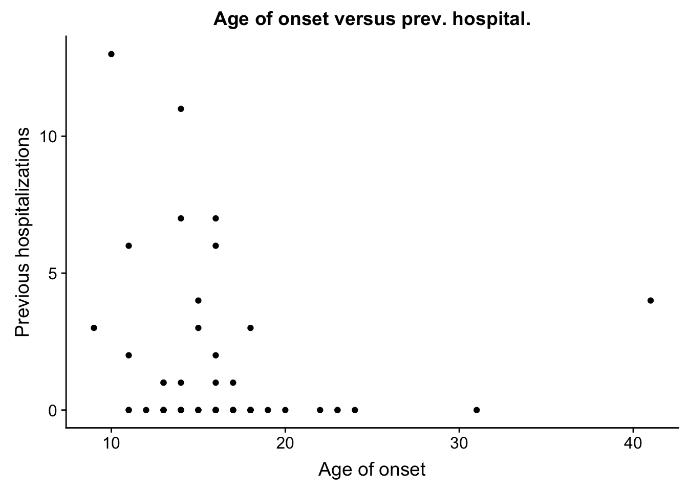

Last updated: 2018-08-28
workflowr checks: (Click a bullet for more information) ✖ R Markdown file: uncommitted changes
The R Markdown is untracked by Git. To know which version of the R Markdown file created these results, you’ll want to first commit it to the Git repo. If you’re still working on the analysis, you can ignore this warning. When you’re finished, you can run wflow_publish to commit the R Markdown file and build the HTML.
✔ Environment: empty
Great job! The global environment was empty. Objects defined in the global environment can affect the analysis in your R Markdown file in unknown ways. For reproduciblity it’s best to always run the code in an empty environment.
✔ Seed:
set.seed(12345)
The command set.seed(12345) was run prior to running the code in the R Markdown file. Setting a seed ensures that any results that rely on randomness, e.g. subsampling or permutations, are reproducible.
✔ Session information: recorded
Great job! Recording the operating system, R version, and package versions is critical for reproducibility.
✔ Repository version: 241c630
wflow_publish or wflow_git_commit). workflowr only checks the R Markdown file, but you know if there are other scripts or data files that it depends on. Below is the status of the Git repository when the results were generated:
Ignored files:
Ignored: .DS_Store
Ignored: analysis/.DS_Store
Ignored: data/.DS_Store
Ignored: data/aux_info/
Ignored: data/hg_38/
Ignored: data/libParams/
Ignored: output/.DS_Store
Untracked files:
Untracked: _workflowr.yml
Untracked: analysis/Collection_dates.Rmd
Untracked: analysis/Converting_IDs.Rmd
Untracked: analysis/Global_variation.Rmd
Untracked: analysis/Preliminary_clinical_covariate.Rmd
Untracked: analysis/VennDiagram2018-07-24_06-55-46.log
Untracked: analysis/VennDiagram2018-07-24_06-56-13.log
Untracked: analysis/VennDiagram2018-07-24_06-56-50.log
Untracked: analysis/VennDiagram2018-07-24_06-58-41.log
Untracked: analysis/VennDiagram2018-07-24_07-00-07.log
Untracked: analysis/VennDiagram2018-07-24_07-00-42.log
Untracked: analysis/VennDiagram2018-07-24_07-01-08.log
Untracked: analysis/VennDiagram2018-08-17_15-13-24.log
Untracked: analysis/VennDiagram2018-08-17_15-13-30.log
Untracked: analysis/VennDiagram2018-08-17_15-15-06.log
Untracked: analysis/VennDiagram2018-08-17_15-16-01.log
Untracked: analysis/VennDiagram2018-08-17_15-17-51.log
Untracked: analysis/VennDiagram2018-08-17_15-18-42.log
Untracked: analysis/VennDiagram2018-08-17_15-19-21.log
Untracked: analysis/VennDiagram2018-08-20_09-07-57.log
Untracked: analysis/VennDiagram2018-08-20_09-08-37.log
Untracked: analysis/VennDiagram2018-08-26_19-54-03.log
Untracked: analysis/VennDiagram2018-08-26_20-47-08.log
Untracked: analysis/VennDiagram2018-08-26_20-49-49.log
Untracked: analysis/VennDiagram2018-08-27_00-04-36.log
Untracked: analysis/VennDiagram2018-08-27_00-09-27.log
Untracked: analysis/VennDiagram2018-08-27_00-13-57.log
Untracked: analysis/VennDiagram2018-08-27_00-16-32.log
Untracked: analysis/VennDiagram2018-08-27_10-00-25.log
Untracked: analysis/VennDiagram2018-08-28_06-03-13.log
Untracked: analysis/VennDiagram2018-08-28_06-03-14.log
Untracked: analysis/VennDiagram2018-08-28_06-05-50.log
Untracked: analysis/VennDiagram2018-08-28_06-06-58.log
Untracked: analysis/VennDiagram2018-08-28_06-10-12.log
Untracked: analysis/VennDiagram2018-08-28_06-10-13.log
Untracked: analysis/VennDiagram2018-08-28_06-18-29.log
Untracked: analysis/VennDiagram2018-08-28_07-22-26.log
Untracked: analysis/VennDiagram2018-08-28_07-22-27.log
Untracked: analysis/background_dds_david.csv
Untracked: analysis/correlations_bet_covariates.Rmd
Untracked: analysis/correlations_over_time.Rmd
Untracked: analysis/genocode_annotation_info.Rmd
Untracked: analysis/genotypes.Rmd
Untracked: analysis/import_transcript_level_estimates.Rmd
Untracked: analysis/test_dds_david.csv
Untracked: analysis/variables_by_time.Rmd
Untracked: analysis/voom_limma.Rmd
Untracked: analysis/voom_limma_hg37.Rmd
Untracked: analysis/voom_limma_weight_change.Rmd
Untracked: data/BAN2 Dates_T1_T2.xlsx
Untracked: data/BAN_DATES.csv
Untracked: data/BAN_DATES.xlsx
Untracked: data/BAN_DATES_txt.csv
Untracked: data/Ban_geno.csv
Untracked: data/Ban_geno.xlsx
Untracked: data/Blood_dates.txt
Untracked: data/DAVID_background.txt
Untracked: data/DAVID_list_T1T2.txt
Untracked: data/DAVID_list_T1T2_weight.txt
Untracked: data/DAVID_list_T2T3.txt
Untracked: data/DAVID_list_T2T3_weight.txt
Untracked: data/DAVID_results/
Untracked: data/DAVID_top100_list_T1T2.txt
Untracked: data/DAVID_top100_list_T1T2_weight.txt
Untracked: data/DAVID_top100_list_T2T3.txt
Untracked: data/DAVID_top100_list_T2T3_weight.txt
Untracked: data/Eigengenes/
Untracked: data/FemaleWeightRestoration-01-dataInput.RData
Untracked: data/FemaleWeightRestoration-resid-01-dataInput.RData
Untracked: data/FemaleWeightRestoration-resid-T1T2-01-dataInput.RData
Untracked: data/HTSF_IDs.sav
Untracked: data/Homo_sapiens.GRCh38.v22_table.txt
Untracked: data/Labels.csv
Untracked: data/Labels.xlsx
Untracked: data/RIN.xlsx
Untracked: data/RIN_over_time.csv
Untracked: data/RIN_over_time.xlsx
Untracked: data/T0_consolid.csv
Untracked: data/T0_consolid.xlsx
Untracked: data/age_t1.txt
Untracked: data/birthday_age.csv
Untracked: data/birthday_age.xlsx
Untracked: data/clinical_sample_info.csv
Untracked: data/clinical_sample_info_geno.csv
Untracked: data/cmd_info.json
Untracked: data/counts_hg37_gc_txsalmon.RData
Untracked: data/counts_hg38_gc.RData
Untracked: data/counts_hg38_gc_dds.RData
Untracked: data/counts_hg38_gc_txsalmon.RData
Untracked: data/covar_lm.csv
Untracked: data/covar_lm_missing.csv
Untracked: data/eigengenes_T1_T2_cov_adj_exp_5_modules.txt
Untracked: data/eigengenes_T1_T2_module_background.txt
Untracked: data/eigengenes_adj_exp_7_modules.txt
Untracked: data/eigengenes_cov_adj_exp_14_modules.txt
Untracked: data/eigengenes_module_background.txt
Untracked: data/eigengenes_unadj_exp_10_modules.txt
Untracked: data/eigengenes_unadj_exp_6_modules.txt
Untracked: data/eigengenes_unadj_exp_9_modules.txt
Untracked: data/files_list.txt
Untracked: data/final_covariates.csv
Untracked: data/gene_exp_values_2202.txt
Untracked: data/gene_exp_values_2209.txt
Untracked: data/gene_exp_values_2218.txt
Untracked: data/gene_exp_values_2220.txt
Untracked: data/gene_exp_values_2226.txt
Untracked: data/gene_exp_values_2228.txt
Untracked: data/gene_expression_filtered_T1T5.csv
Untracked: data/gene_names_58387.txt
Untracked: data/gene_to_tran.txt
Untracked: data/lm_covar_fixed_random.csv
Untracked: data/lm_covar_fixed_random_geno.csv
Untracked: data/logs/
Untracked: data/module_T1T2_cov_adj_blue.txt
Untracked: data/module_T1T2_cov_adj_brown.txt
Untracked: data/module_T1T2_cov_adj_turquoise.txt
Untracked: data/module_T1T2_cov_adj_yellow.txt
Untracked: data/module_adj_cov_merged_blue.txt
Untracked: data/module_adj_cov_merged_brown.txt
Untracked: data/module_adj_cov_merged_cyan.txt
Untracked: data/module_adj_cov_merged_green.txt
Untracked: data/module_adj_cov_merged_greenyellow.txt
Untracked: data/module_adj_cov_merged_magenta.txt
Untracked: data/module_adj_cov_merged_red.txt
Untracked: data/module_adj_cov_merged_salmon.txt
Untracked: data/module_adj_cov_merged_tan.txt
Untracked: data/module_adj_cov_merged_yellow.txt
Untracked: data/module_black.txt
Untracked: data/module_blue.txt
Untracked: data/module_brown.txt
Untracked: data/module_cov_adj_black.txt
Untracked: data/module_cov_adj_blue.txt
Untracked: data/module_cov_adj_brown.txt
Untracked: data/module_cov_adj_cyan.txt
Untracked: data/module_cov_adj_green.txt
Untracked: data/module_cov_adj_greenyellow.txt
Untracked: data/module_cov_adj_magenta.txt
Untracked: data/module_cov_adj_pink.txt
Untracked: data/module_cov_adj_purple.txt
Untracked: data/module_cov_adj_red.txt
Untracked: data/module_cov_adj_salmon.txt
Untracked: data/module_cov_adj_tan.txt
Untracked: data/module_cov_adj_turquoise.txt
Untracked: data/module_cov_adj_yellow.txt
Untracked: data/module_cyan.txt
Untracked: data/module_green.txt
Untracked: data/module_greenyellow.txt
Untracked: data/module_magenta.txt
Untracked: data/module_merged_black.txt
Untracked: data/module_merged_blue.txt
Untracked: data/module_merged_brown.txt
Untracked: data/module_merged_cyan.txt
Untracked: data/module_merged_green.txt
Untracked: data/module_merged_greenyellow.txt
Untracked: data/module_merged_magenta.txt
Untracked: data/module_merged_pink.txt
Untracked: data/module_merged_purple.txt
Untracked: data/module_merged_red.txt
Untracked: data/module_merged_salmon.txt
Untracked: data/module_merged_tan.txt
Untracked: data/module_merged_turquoise.txt
Untracked: data/module_merged_yellow.txt
Untracked: data/module_pink.txt
Untracked: data/module_purple.txt
Untracked: data/module_red.txt
Untracked: data/module_salmon.txt
Untracked: data/module_tan.txt
Untracked: data/module_turquoise.txt
Untracked: data/module_yellow.txt
Untracked: data/notimecovariates.csv
Untracked: data/only_individuals_biomarkers_weight_restoration_study.xlsx
Untracked: data/pcs_genes.csv
Untracked: data/pcs_genes.txt
Untracked: data/rest1t2_BI_hg37.rds
Untracked: data/rest1t2_BI_hg38.rds
Untracked: data/rest1t2_hg37.rds
Untracked: data/rest1t2_psych_meds_BMI_hg37.rds
Untracked: data/rest1t2_psych_meds_hg37.rds
Untracked: data/rest2t3_BI_hg37.rds
Untracked: data/rest2t3_BI_hg38.rds
Untracked: data/rest2t3_hg37.rds
Untracked: data/rest2t3_psych_meds_BMI_hg37.rds
Untracked: data/rest2t3_psych_meds_hg37.rds
Untracked: data/salmon_gene_matrix_bak_reorder_time.txt
Untracked: data/technical_sample_info.csv
Untracked: data/tx_to_gene.txt
Untracked: data/tx_to_gene_37.txt
Untracked: data/usa2.pcawithref.menv.mds_cov
Untracked: data/vsd_values_hg38_gc.rds
Untracked: data/~$Labels.xlsx
Untracked: data/~$T0_consolid.xlsx
Untracked: docs/VennDiagram2018-07-24_06-55-46.log
Untracked: docs/VennDiagram2018-07-24_06-56-13.log
Untracked: docs/VennDiagram2018-07-24_06-56-50.log
Untracked: docs/VennDiagram2018-07-24_06-58-41.log
Untracked: docs/VennDiagram2018-07-24_07-00-07.log
Untracked: docs/VennDiagram2018-07-24_07-00-42.log
Untracked: docs/VennDiagram2018-07-24_07-01-08.log
Untracked: docs/figure/
Unstaged changes:
Modified: analysis/_site.yml
Modified: analysis/about.Rmd
Deleted: analysis/chunks.R
Modified: analysis/index.Rmd
Modified: analysis/license.Rmd
The goal of this script is to look for correlations in interindividual features.
# Load library for plotting
library(cowplot)Warning: package 'cowplot' was built under R version 3.4.4Loading required package: ggplot2Warning: package 'ggplot2' was built under R version 3.4.4
Attaching package: 'cowplot'The following object is masked from 'package:ggplot2':
ggsavelibrary(ggplot2)
# Load data
ind_only <- read.csv("../data/notimecovariates.csv")
str(ind_only)'data.frame': 55 obs. of 14 variables:
$ Subject_ID : int 2201 397 2203 2204 2205 2206 2207 2208 399 2210 ...
$ age : int 15 33 22 25 20 22 25 18 28 25 ...
$ age_onset : int 14 18 18 24 17 18 11 18 16 16 ...
$ EDU_days : int 14 27 8 69 54 24 42 14 25 32 ...
$ AMA : int 0 0 0 0 0 0 0 0 0 0 ...
$ BAN_ID : int 2201 2202 2203 2204 2205 2206 2207 2208 2209 2210 ...
$ RRED_ID : int NA 397 NA NA NA NA NA NA 399 NA ...
$ AN_subtype : int 2 2 1 2 2 1 2 2 1 2 ...
$ bmiT1T2 : num 0.403 1.209 2.146 6.152 4.379 ...
$ bmiT2T3 : num 3.71 2.31 NA NA NA ...
$ bmiT3T4 : num NA 0.328 NA NA NA ...
$ bmiT4T5 : num NA -1.14 NA NA NA ...
$ Previous_hospitalizations: int 0 0 0 0 1 3 6 0 2 6 ...
$ blooddrawT1T2 : int 7 23 7 64 50 30 41 17 24 31 ...ind_only_characteristics <- c(2,3,4,7,8,9,10,11,12,13)
check_cor <- ind_only[,ind_only_characteristics]
# Obtain correlations and pvalues
pvalues <- matrix(data = NA, nrow = ncol(check_cor), ncol = ncol(check_cor))
colnames(pvalues) <- colnames(check_cor)
rownames(pvalues) <- colnames(check_cor)
correlations <- matrix(data = NA, nrow = ncol(check_cor), ncol = ncol(check_cor))
colnames(correlations) <- colnames(check_cor)
rownames(correlations) <- colnames(check_cor)
j=1
for (j in 1:ncol(check_cor)){
for (i in 1:ncol(check_cor)){
test <- cor.test(check_cor[,j], check_cor[,i], method = "pearson")
#Get the correlation
test$estimate
#Get the p-value
test$p.value
pvalues[j, i] <- test$p.value
correlations[j, i] <- test$estimate
i = i+1
}
j=j+1
}
correlations age age_onset EDU_days RRED_ID
age 1.00000000 0.361643374 0.1345161 -0.44559957
age_onset 0.36164337 1.000000000 0.1723813 -0.13408597
EDU_days 0.13451614 0.172381253 1.0000000 0.81727195
RRED_ID -0.44559957 -0.134085966 0.8172719 1.00000000
AN_subtype -0.38084175 0.137205171 0.1887103 0.61806183
bmiT1T2 0.09101302 0.139117815 0.8013206 0.09571416
bmiT2T3 -0.18762940 0.002185421 -0.5372788 -0.53258026
bmiT3T4 0.72996681 0.964425133 0.4877921 0.06950031
bmiT4T5 -0.24145366 0.004459013 0.2467419 0.11796462
Previous_hospitalizations 0.34946918 -0.149144926 -0.1951609 -0.44023678
AN_subtype bmiT1T2 bmiT2T3 bmiT3T4
age -0.38084175 0.09101302 -0.187629403 0.72996681
age_onset 0.13720517 0.13911782 0.002185421 0.96442513
EDU_days 0.18871035 0.80132055 -0.537278813 0.48779208
RRED_ID 0.61806183 0.09571416 -0.532580262 0.06950031
AN_subtype 1.00000000 0.03106122 -0.181503474 0.50419131
bmiT1T2 0.03106122 1.00000000 -0.454577208 0.52175945
bmiT2T3 -0.18150347 -0.45457721 1.000000000 -0.78369298
bmiT3T4 0.50419131 0.52175945 -0.783692982 1.00000000
bmiT4T5 -0.15058251 0.68553958 -0.203850682 0.04184299
Previous_hospitalizations -0.11755556 -0.10471376 -0.233805818 0.51633825
bmiT4T5 Previous_hospitalizations
age -0.241453657 0.34946918
age_onset 0.004459013 -0.14914493
EDU_days 0.246741944 -0.19516095
RRED_ID 0.117964615 -0.44023678
AN_subtype -0.150582506 -0.11755556
bmiT1T2 0.685539581 -0.10471376
bmiT2T3 -0.203850682 -0.23380582
bmiT3T4 0.041842992 0.51633825
bmiT4T5 1.000000000 -0.01483947
Previous_hospitalizations -0.014839475 1.00000000pvalues age age_onset EDU_days
age 0.000000000 0.007210779 3.275088e-01
age_onset 0.007210779 0.000000000 2.125979e-01
EDU_days 0.327508796 0.212597881 0.000000e+00
RRED_ID 0.375839540 0.800076420 4.703371e-02
AN_subtype 0.004124433 0.322494325 1.676478e-01
bmiT1T2 0.508714337 0.315729877 2.013089e-13
bmiT2T3 0.339019857 0.991193999 3.195715e-03
bmiT3T4 0.099531753 0.001875846 3.263448e-01
bmiT4T5 0.644857873 0.993311524 6.373981e-01
Previous_hospitalizations 0.010319342 0.291301304 1.613872e-01
RRED_ID AN_subtype bmiT1T2
age 3.758395e-01 0.004124433 5.087143e-01
age_onset 8.000764e-01 0.322494325 3.157299e-01
EDU_days 4.703371e-02 0.167647817 2.013089e-13
RRED_ID 1.848893e-32 0.190957197 8.568672e-01
AN_subtype 1.909572e-01 0.000000000 8.218864e-01
bmiT1T2 8.568672e-01 0.821886396 0.000000e+00
bmiT2T3 2.766606e-01 0.355305169 1.508879e-02
bmiT3T4 8.959174e-01 0.307797987 2.883809e-01
bmiT4T5 8.238739e-01 0.775833477 1.327803e-01
Previous_hospitalizations 3.823056e-01 0.401849604 4.555437e-01
bmiT2T3 bmiT3T4 bmiT4T5
age 0.339019857 9.953175e-02 0.6448579
age_onset 0.991193999 1.875846e-03 0.9933115
EDU_days 0.003195715 3.263448e-01 0.6373981
RRED_ID 0.276660602 8.959174e-01 0.8238739
AN_subtype 0.355305169 3.077980e-01 0.7758335
bmiT1T2 0.015088793 2.883809e-01 0.1327803
bmiT2T3 0.000000000 6.512272e-02 0.6984595
bmiT3T4 0.065122724 1.848893e-32 0.9372721
bmiT4T5 0.698459494 9.372721e-01 0.0000000
Previous_hospitalizations 0.231126226 2.943219e-01 0.9777424
Previous_hospitalizations
age 0.01031934
age_onset 0.29130130
EDU_days 0.16138720
RRED_ID 0.38230563
AN_subtype 0.40184960
bmiT1T2 0.45554372
bmiT2T3 0.23112623
bmiT3T4 0.29432185
bmiT4T5 0.97774242
Previous_hospitalizations 0.00000000#Find which variables are p-value < 0.05
pvalues <=0.05 age age_onset EDU_days RRED_ID AN_subtype
age TRUE TRUE FALSE FALSE TRUE
age_onset TRUE TRUE FALSE FALSE FALSE
EDU_days FALSE FALSE TRUE TRUE FALSE
RRED_ID FALSE FALSE TRUE TRUE FALSE
AN_subtype TRUE FALSE FALSE FALSE TRUE
bmiT1T2 FALSE FALSE TRUE FALSE FALSE
bmiT2T3 FALSE FALSE TRUE FALSE FALSE
bmiT3T4 FALSE TRUE FALSE FALSE FALSE
bmiT4T5 FALSE FALSE FALSE FALSE FALSE
Previous_hospitalizations TRUE FALSE FALSE FALSE FALSE
bmiT1T2 bmiT2T3 bmiT3T4 bmiT4T5
age FALSE FALSE FALSE FALSE
age_onset FALSE FALSE TRUE FALSE
EDU_days TRUE TRUE FALSE FALSE
RRED_ID FALSE FALSE FALSE FALSE
AN_subtype FALSE FALSE FALSE FALSE
bmiT1T2 TRUE TRUE FALSE FALSE
bmiT2T3 TRUE TRUE FALSE FALSE
bmiT3T4 FALSE FALSE TRUE FALSE
bmiT4T5 FALSE FALSE FALSE TRUE
Previous_hospitalizations FALSE FALSE FALSE FALSE
Previous_hospitalizations
age TRUE
age_onset FALSE
EDU_days FALSE
RRED_ID FALSE
AN_subtype FALSE
bmiT1T2 FALSE
bmiT2T3 FALSE
bmiT3T4 FALSE
bmiT4T5 FALSE
Previous_hospitalizations TRUESignificant correlations:
Suprisingly, AMA and EDU_days/AMA and days between T1 and T2 blood draws were not significantly correlated (maybe because those indviduals staying less than one week were not counted)?
AMA_EDU <- ggplot(ind_only, aes(as.factor(ind_only$AMA), ind_only$EDU_days)) + geom_boxplot() + geom_dotplot(binaxis='y', stackdir='center', dotsize=0.5) + xlab("AMA status") + ylab("EDU days") + ggtitle("EDU days versus AMA status")
plot_grid(AMA_EDU)`stat_bindot()` using `bins = 30`. Pick better value with `binwidth`.
#save_plot("/Users/laurenblake/Dropbox/Lauren Blake/Figures/AMA_EDU.png", AMA_EDU,
# base_aspect_ratio = 1)EDU_change <- ggplot(ind_only, aes(ind_only$EDU_days, ind_only$bmiT1T2)) + geom_point() + xlab("EDU days") + ylab("BMI change (T1 to T2)") + ggtitle("BMI change versus EDU days")
plot_grid(EDU_change)
save_plot("/Users/laurenblake/Dropbox/Lauren Blake/Figures/EDU_change_bmiT1T2.png", EDU_change,
base_aspect_ratio = 1)EDU_change <- ggplot(ind_only, aes(ind_only$EDU_days, ind_only$bmiT2T3)) + geom_point() + xlab("EDU days") + ylab("BMI change (T2 to T3)") + ggtitle("BMI change versus EDU days")
plot_grid(EDU_change)Warning: Removed 27 rows containing missing values (geom_point).
save_plot("/Users/laurenblake/Dropbox/Lauren Blake/Figures/EDU_change_bmiT2T3.png", EDU_change,
base_aspect_ratio = 1)Warning: Removed 27 rows containing missing values (geom_point).EDU_change <- ggplot(ind_only, aes(ind_only$bmiT1T2, ind_only$bmiT2T3)) + geom_point() + xlab("BMI change (T1 to T2)") + ylab("BMI change (T2 to T3)") + ggtitle("BMI changes")
plot_grid(EDU_change)Warning: Removed 27 rows containing missing values (geom_point).
#save_plot("/Users/laurenblake/Dropbox/Lauren Blake/Figures/bmiT1T2_bmiT2T3.png", EDU_change,
# base_aspect_ratio = 1)EDU_change <- ggplot(ind_only, aes(ind_only$bmiT2T3, ind_only$bmiT3T4)) + geom_point() + xlab("BMI change (T2 to T3)") + ylab("BMI change (T3 to T4)") + ggtitle("BMI changes")
plot_grid(EDU_change)Warning: Removed 49 rows containing missing values (geom_point).
#save_plot("/Users/laurenblake/Dropbox/Lauren Blake/Figures/bmiT2T3_bmiT3T4.png", EDU_change,
# base_aspect_ratio = 1)AMA_EDU <- ggplot(ind_only, aes(as.factor(ind_only$AMA), ind_only$bmiT2T3)) + geom_boxplot() + geom_dotplot(binaxis='y', stackdir='center', dotsize=0.5) + xlab("AMA status") + ylab("BMI change (T2 to T3)") + ggtitle("BMI change (T2 to T3) versus AMA status")
plot_grid(AMA_EDU)Warning: Removed 27 rows containing non-finite values (stat_boxplot).`stat_bindot()` using `bins = 30`. Pick better value with `binwidth`.Warning: Removed 27 rows containing non-finite values (stat_bindot).
#save_plot("/Users/laurenblake/Dropbox/Lauren Blake/Figures/AMA_EDU.png", AMA_EDU,
# base_aspect_ratio = 1)EDU_change <- ggplot(ind_only, aes(ind_only$age_onset, ind_only$bmiT3T4)) + geom_point() + xlab("Age of onset") + ylab("BMI change (T3 to T4)") + ggtitle("Age of onset versus BMI change (T3 to T4")
plot_grid(EDU_change)Warning: Removed 49 rows containing missing values (geom_point).
#save_plot("/Users/laurenblake/Dropbox/Lauren Blake/Figures/age_onset_bmiT3T4.png", EDU_change,
# base_aspect_ratio = 1)RIN_over_time <- read.csv("../data/RIN_over_time.csv")
RIN_by_time <- ggplot(RIN_over_time, aes(as.factor(RIN_over_time[,3]), RIN_over_time[,2])) + geom_boxplot(aes(fill=as.factor(RIN_over_time[,3]))) + geom_jitter(width = 0.15) + xlab("Time") + ylab("RIN score") + ggtitle("RIN scores by timepoint (T1-T3)") + scale_fill_manual(name = "Time", values=c("#F8766D", "#B79F00", "#00BA38"))
plot_grid(RIN_by_time)
summary(lm(RIN_over_time[,2] ~ as.factor(t(RIN_over_time[,3]))))
Call:
lm(formula = RIN_over_time[, 2] ~ as.factor(t(RIN_over_time[,
3])))
Residuals:
Min 1Q Median 3Q Max
-2.41455 -0.31455 0.08545 0.41765 1.01765
Coefficients:
Estimate Std. Error t value Pr(>|t|)
(Intercept) 6.55926 0.08696 75.429 <2e-16 ***
as.factor(t(RIN_over_time[, 3]))2 0.05529 0.12242 0.452 0.6522
as.factor(t(RIN_over_time[, 3]))3 0.32309 0.13990 2.309 0.0224 *
---
Signif. codes: 0 '***' 0.001 '**' 0.01 '*' 0.05 '.' 0.1 ' ' 1
Residual standard error: 0.639 on 140 degrees of freedom
Multiple R-squared: 0.03935, Adjusted R-squared: 0.02563
F-statistic: 2.867 on 2 and 140 DF, p-value: 0.0602#save_plot("/Users/laurenblake/Dropbox/Lauren Blake/Figures/RIN_by_time.png", RIN_by_time,
# base_aspect_ratio = 1)# Look at correlations
cor(ind_only$age_onset, ind_only$age, "pairwise.complete.obs")[1] 0.3616434cor(ind_only$Previous_hospitalizations, ind_only$age, "pairwise.complete.obs")[1] 0.3494692cor(ind_only$age_onset, ind_only$Previous_hospitalizations, "pairwise.complete.obs")[1] -0.1491449ages <- ggplot(ind_only, aes(ind_only$age_onset, ind_only$age)) + geom_point() + xlab("Age of onset") + ylab("Age at T1") + ggtitle("Age at T1 versus age of onset")
plot_grid(ages)Warning: Removed 1 rows containing missing values (geom_point).
#save_plot("/Users/laurenblake/Dropbox/Lauren Blake/Figures/Age_age_onset.png", ages,
# base_aspect_ratio = 1)
prev_hosp <- ggplot(ind_only, aes(ind_only$age_onset, ind_only$Previous_hospitalizations)) + geom_point() + xlab("Age of onset") + ylab("Previous hospitalizations") + ggtitle("Age of onset versus prev. hospital.")
plot_grid(prev_hosp)Warning: Removed 3 rows containing missing values (geom_point).
#save_plot("/Users/laurenblake/Dropbox/Lauren Blake/Figures/Age_onset_prev_hosp.png", prev_hosp,
# base_aspect_ratio = 1)sessionInfo()R version 3.4.3 (2017-11-30)
Platform: x86_64-apple-darwin15.6.0 (64-bit)
Running under: OS X El Capitan 10.11.6
Matrix products: default
BLAS: /Library/Frameworks/R.framework/Versions/3.4/Resources/lib/libRblas.0.dylib
LAPACK: /Library/Frameworks/R.framework/Versions/3.4/Resources/lib/libRlapack.dylib
locale:
[1] en_US.UTF-8/en_US.UTF-8/en_US.UTF-8/C/en_US.UTF-8/en_US.UTF-8
attached base packages:
[1] stats graphics grDevices utils datasets methods base
other attached packages:
[1] cowplot_0.9.3 ggplot2_3.0.0
loaded via a namespace (and not attached):
[1] Rcpp_0.12.18 compiler_3.4.3 pillar_1.3.0
[4] git2r_0.23.0 plyr_1.8.4 workflowr_1.1.1
[7] bindr_0.1.1 R.methodsS3_1.7.1 R.utils_2.6.0
[10] tools_3.4.3 digest_0.6.16 evaluate_0.11
[13] tibble_1.4.2 gtable_0.2.0 pkgconfig_2.0.2
[16] rlang_0.2.2 yaml_2.2.0 bindrcpp_0.2.2
[19] withr_2.1.2 stringr_1.3.1 dplyr_0.7.6
[22] knitr_1.20 rprojroot_1.3-2 grid_3.4.3
[25] tidyselect_0.2.4 glue_1.3.0 R6_2.2.2
[28] rmarkdown_1.10 purrr_0.2.5 magrittr_1.5
[31] whisker_0.3-2 backports_1.1.2 scales_1.0.0
[34] htmltools_0.3.6 assertthat_0.2.0 colorspace_1.3-2
[37] labeling_0.3 stringi_1.2.4 lazyeval_0.2.1
[40] munsell_0.5.0 crayon_1.3.4 R.oo_1.22.0
This reproducible R Markdown analysis was created with workflowr 1.1.1